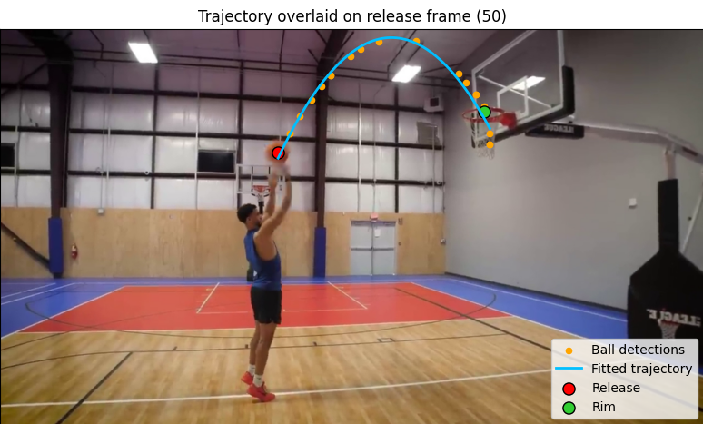

Your basketball shot, broken down by AI.
Basketball Lab turns a shooting video into clear mechanics, joint angles, trajectory metrics, release visuals, and coaching feedback.

Video alone does not tell you what to fix.
You can film your shot and still miss the important details. Basketball Lab is built to turn motion into measurable feedback: release angle, joint mechanics, trajectory, and practical coaching cues.
Readable feedback from real shot data.
Release analysis
Estimate release angle, release height, and entry angle from the shooting motion.
Joint mechanics
Track elbow and knee angles around release to evaluate sequence and extension.
Visual outputs
Review the release frame, angle plots, video output, and generated metrics.
AI coaching layer
Convert measurements into concise, practical feedback that is easy to understand.
Example output from the current pipeline.
This section uses the same resources you already generated: video, release frame, angle plots, metrics, and AI feedback.
From video to feedback in three steps.
Record a shot
Use a normal basketball shooting video from a phone camera.
Run the pipeline
The system extracts pose, release frame, joint angles, and trajectory metrics.
Read the feedback
The output becomes charts, key metrics, release visuals, and AI coaching notes.
More structured than just watching your own video.
Filming yourself
You see the shot, but you still need to guess what changed and what matters.
Generic coaching tips
Useful, but not based on your own release frame, angle data, and motion sequence.
Basketball Lab
Combines video, computer vision metrics, visual outputs, and AI-generated feedback.
Follow the product before release.
The pipeline works and a mobile prototype is already in testing. Leave your email to receive future updates and early access news.
Simple answers.
Is this an AI app?
Yes. The product uses computer vision outputs and an AI feedback layer to explain shot mechanics.
Is it already on app stores?
No. It is currently a pre-launch prototype with a working pipeline and mobile testing version.
Do I need special hardware?
The concept is based on normal video input, not expensive tracking equipment.
What does the prototype analyze?
Release angle, elbow angle, knee angle, entry angle, release height, release frame, and feedback.